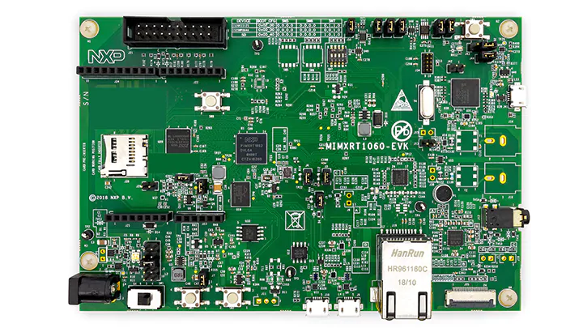

NXP i.MXRT1060 evalboard
Board featuring 600 MHz ARM Cortex-M7 core without internal flash. But it has support for both QSPI and HyperFlash. Can be powered from usb. It has onboard LPC-Link programmer.
Technical and Functional Specifications:
- Memory
- 256 Mb SDRAM memory
- 512 Mb Hyper Flash
- 64 Mb QSPI Flash
- TF socket for SD card
- Display and Audio
- Parallel LCD connector
- Camera connector
- Audio codec
- 4-pole audio headphone jack
- External speaker connection
- Microphone
- S/PDIF connector
- Connectivity
- Micro USB host and OTG connectors
- Ethernet (10/100M) connector
- CAN transceiver
- Arduino® interface

Specification acquired from NXP product page
Firmware images (ready to deploy)
The ready to use firmware images provided include support for the class libraries and features marked bellow.
| Gpio | Spi | I2c | Pwm | Adc | Serial | Events | SWO | Networking | Large Heap |
|---|---|---|---|---|---|---|---|---|---|
| ✔️ | ✔️ | ✔️ | ✔️ | ✔️ |
| Stable | Preview |
|---|---|
J-Link
If you want to use dedicated J-Link programmer instead of onboard one, please refer to SEGGER wiki. It describes how to configure J-Link to work with i.MXRT1060 microcontroller.
To setup J-Link in Visual Studio Core refer to this guide.